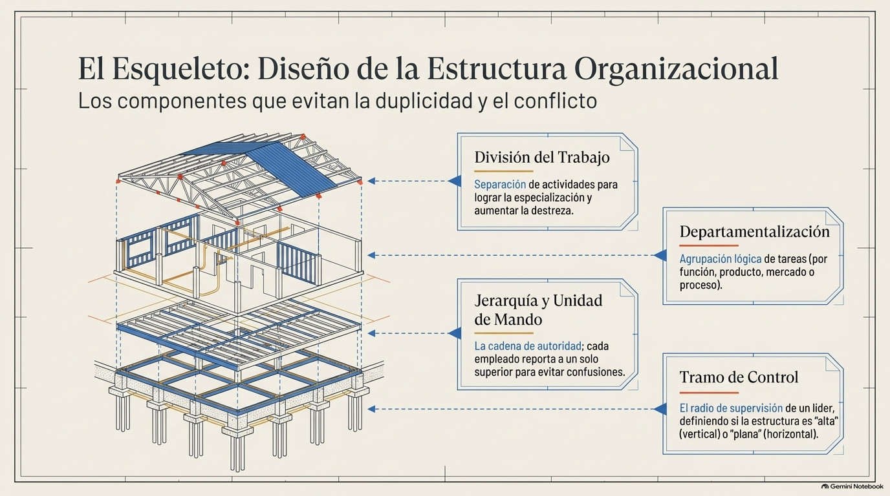
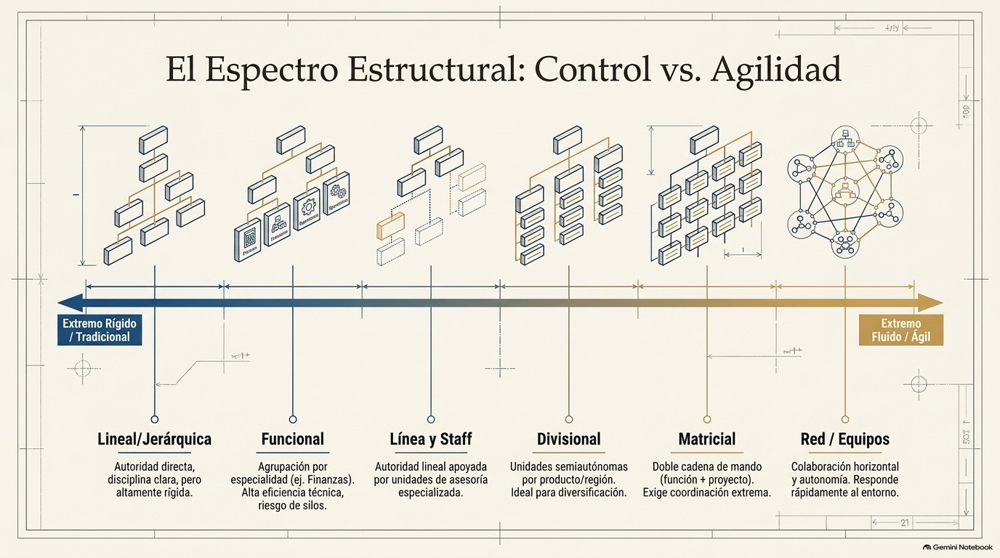

Unidad III · Tema 3.1
Estructura Organizacional
La base estructural que distribuye responsabilidades y coordina esfuerzos.
3.1.1¿Qué es la estructura organizacional?
La estructura organizacional es la forma en que una empresa reparte, agrupa y coordina sus actividades, funciones, responsabilidades y niveles de autoridad para lograr sus objetivos de manera eficiente. Es como el esqueleto de la organización, porque define quién hace qué, quién depende de quién y cómo fluye la comunicación entre los puestos y las áreas. Si la estructura está bien diseñada, se aprovechan mejor los recursos, no se duplican funciones, queda claro quién es responsable de qué y el trabajo se coordina más fácil. En cambio, una estructura mal hecha genera confusión, conflictos de autoridad y pérdida de productividad.
3.1.2Elementos de la estructura organizacional
Toda estructura se arma a partir de varios elementos. Primero está la división del trabajo, que consiste en separar las actividades en tareas más específicas para asignarlas a distintos puestos, lo que favorece la especialización. Luego viene la departamentalización, que es agrupar esas actividades en áreas o unidades de la empresa, ya sea por funciones, productos, zonas geográficas, clientes o procesos. También está la jerarquía, que establece los niveles de autoridad y la cadena de mando desde la alta dirección hasta el nivel operativo. Relacionado con esto está el tramo de control, que es el número de subordinados que un jefe puede supervisar bien. De ahí depende que la estructura sea alta, con muchos niveles jerárquicos, o más plana, con pocos. Por último, la centralización o descentralización define si las decisiones se concentran en la alta dirección o se delegan a los niveles de abajo, y la formalización indica qué tanto están documentadas y estandarizadas las reglas, los procedimientos y las funciones.

3.1.3Tipos de estructura organizacional
Hay varios modelos de estructura, y cada uno sirve para distintas necesidades. La lineal o jerárquica es la más sencilla y tradicional: la autoridad baja directo del jefe a sus subordinados, lo que ayuda a la disciplina y a la unidad de mando, aunque en empresas grandes puede volverse muy rígida. La funcional agrupa a la gente según su especialidad (producción, finanzas, ventas, recursos humanos), lo que favorece la eficiencia técnica pero puede complicar la coordinación entre áreas. La de línea y staff combina la autoridad de mando con unidades de asesoría especializada que apoyan las decisiones sin tener autoridad directa. La divisional organiza la empresa en unidades semiautónomas por productos, mercados o regiones, y es útil en compañías grandes y diversificadas. La matricial usa dos criterios de agrupación a la vez, normalmente funciones y proyectos, así que los trabajadores le responden a dos jefes al mismo tiempo. Eso da flexibilidad, pero exige muy buena coordinación. Por último están las estructuras en red o por equipos, cada vez más comunes en empresas modernas y tecnológicas, que le dan prioridad a la colaboración horizontal, a la autonomía de los equipos y a responder rápido a los cambios.

3.1.4El organigrama
El organigrama es la representación gráfica de la estructura organizacional. Muestra visualmente los puestos, las áreas y los niveles jerárquicos de la empresa, así como las relaciones de autoridad y comunicación entre ellos. Según su contenido puede ser estructural, si solo muestra las unidades y su relación jerárquica; funcional, si además describe las funciones principales de cada área; o de personal, si indica cuántos puestos hay o los nombres de quienes los ocupan.
Según su forma, puede ser vertical, que muestra la jerarquía de arriba hacia abajo; horizontal, de izquierda a derecha; o circular, con la alta dirección en el centro. Sirve para entender rápido cómo está organizada la empresa, orientar a los empleados nuevos y detectar si hay funciones duplicadas o responsabilidades que nadie tiene asignadas.
3.1.5Factores que influyen en el diseño de la estructura
Al diseñar la estructura, la dirección tiene que tomar en cuenta varios factores. Uno es la estrategia de la empresa: si busca innovar todo el tiempo, necesita esquemas más flexibles que una que se enfoca en reducir costos. El tamaño también influye, porque entre más empleados hay, normalmente se necesita más división del trabajo y más niveles de coordinación. Y la tecnología que usan los procesos, qué tan estable o cambiante es el entorno y la cultura organizacional también determinan qué tan formal, flexible y descentralizada conviene que sea la estructura.
Genially · Estructura Organizacional
Comprueba tu comprensión
Verifica tu dominio sobre la estructura organizacional con la actividad interactiva.